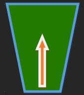

gravityfallscommerce.com
Company Logo
The purpose of the Gravity Falls Chamber of Commerce site is to coordinate community efforts. Community events should be easily accessible. Weather conditions and calls to action should be prominently featured. There should also be a section for local business spotlights. Historical information and current demographics should be easy to locate. Images should be included of local events. A directory of local businesses should be on one page. There should also be a page for members of the community to sign up for events. There should be an easily accessible contact page as well. We hope to use this site as a place for the community to facilitate action and fun.